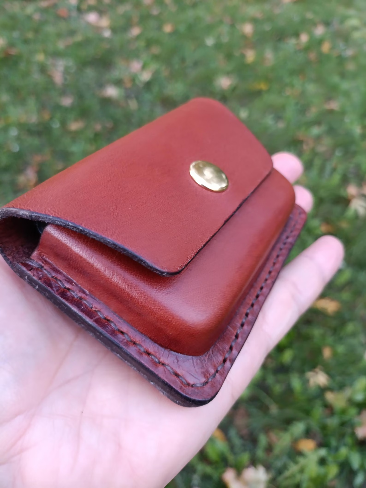

Brown Leather Belt Pouch, Brown Leather Belt Bag, EDC Pocket Organizer, Compact Belt Holster for Men, gift for him
A handmade leather belt pouch designed to organize coins, cards and small everyday essentials in a compact EDC accessory.
Price: $69 USD
Buy on EtsyHandmade Leather EDC
Keep everyday essentials close at hand with this handmade brown leather belt pouch. Crafted from premium Italian vegetable-tanned leather, it provides a compact way to organize coins, cards, folded cash, and small EDC accessories without the bulk of a larger bag.
The pouch is designed to slide onto a standard belt and sit conveniently at your hip. Its compact format can hold multiple credit cards, folded bills, a pocket knife or multitool, and small accessories such as keys, a flash drive, or a lighter. With its practical size and understated leather design, it makes a useful everyday carry accessory and a thoughtful gift for him.
Dimensions: 2.75 inches (70 mm) high, 4.33 inches (110 mm) wide, and 0.98 inches (25 mm) deep. It fits standard belts up to 1.57 inches wide (up to 40 mm).
Product Details
- Material: Premium Italian vegetable-tanned leather
- Height: 2.75 inches (70 mm)
- Width: 4.33 inches (110 mm)
- Depth: 0.98 inches (25 mm)
- Belt compatibility: Fits standard belts up to 1.57 inches wide (up to 40 mm)
- Designed to carry coins, multiple credit cards, folded cash, a pocket knife or multitool, keys, flash drives, or a lighter
Get This Handmade Leather Product
This handmade leather product is available through the LeatherBagsKingdom Etsy shop.
Buy on Etsy